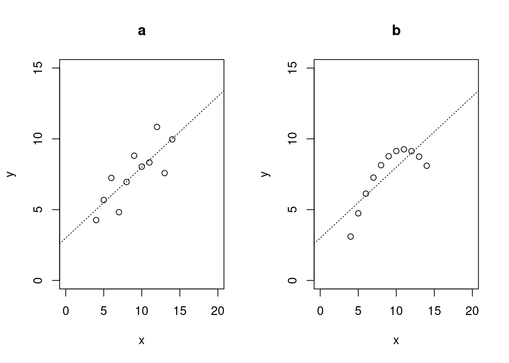

6 Nonlinear and nonparametric models
In the last part of the module we discuss methods that go beyond the linear methods prevalent in classical multivariate statistics.
Relevant textbooks:
The lectures for much of this part of the module follow selected chapters from the following three text books:
James et al. (2021) An introduction to statistical learning with applications in R (2nd edition). Springer.
Rogers and Girolami (2017) A first course in machine learning (2nd edition). CRC Press.
Please study the relevant section and chapters as indicated below in each subsection!
6.1 Limits of linear models and correlation
Linear models are very effective tools. However, it is important to recognise their limits especially when modelling complex nonlinear relationships.
6.1.1 Correlation only measures linear dependence
A very simple demonstration of this is given by the following example. Assume \(x\) is a normally distributed random variable with \(x \sim N(0,1)\). From \(x\) we construct a second random variable \(y = x^2\) — thus \(y\) fully depends on \(x\) with no added extra noise. What is the correlation between \(x\) and \(y\)?
Let’s ansers this question by running a small computer simulation:
## [1] -0.05705484Thus, correlation is (almost) zero even though \(x\) and \(y\) are fully dependent! This is because correlation only measures linear association!
6.1.2 Anscombe data sets
Using correlation, and more generally linear models, blindly can thus hide the underlying complexity of the analysed data. This is demonstrated by the classic “Anscombe quartet” of data sets (F. J. Anscombe. 1973. Graphs in statistical analysis. The American Statistician 27:17-21, http://dx.doi.org/10.1080/00031305.1973.10478966 ):

As evident from the scatter plots the relationship between the two variables \(x\) and \(y\) is very different in the four cases! However, intriguingly all four data sets share exactly the same linear characteristics and summary statistics:
- Means \(m_x = 9\) and \(m_y = 7.5\)
- Variances \(s^2_x = 11\) and \(s^2_y = 4.13\)
- Correlation \(r = 0.8162\)
- Linear model fit with intercept \(a=3.0\) and slope \(b=0.5\)
Thus, in actual data analysis it is always a good idea to inspect the data visually to get a first impression whether using a linear model makes sense.
In the above only data “a” follows a linear model. Data “b” represents a quadratic relationship. Data “c” is linear but with an outlier that disturbs the linear relationship. Finally data “d” also contains an outlier but also represent a case where \(y\) is (apart from the outlier) is not dependent on \(x\).
In the Worksheet 10 a more recent version of the Anscombe quartet will be analysed in the form of the “datasauRus” dozen - 13 highly nonlinear datasets that all share the same linear characteristics.
6.1.3 Alternatives
- Mutual information (based on relative entropy) as discussed in previous chapter
- Other measures designed to capture nonlinear association, such as distance correlation. and ii) the maximal information coefficient (MIC and \(\text{MIC}_e\)).
6.2 Random forests
Another widely used approach for prediction in nonlinear settings is the method of random forests.
Relevant reading:
Please read: James et al. (2013) Chapter 8 “Tree-Based Methods”
Specifically:
- Section 8.1 The Basics of Decision Trees
- Section 8.2.1 Bagging
- Section 8.2.2 Random Forests
6.2.1 Stochastic vs. algorithmic models
Two cultures in statistical modelling: stochastic vs. algorithmic models
Classic discussion paper by Leo Breiman (2001): Statistical modeling: the two cultures. Statistical Science 16:199–231. https://projecteuclid.org/euclid.ss/1009213726
This paper has recently be revisited in the following discussion paper by Efron (2020) and discussants: Prediction, estimation, and attribution. JASA 115:636–677. https://doi.org/10.1080/01621459.2020.1762613
6.2.2 Random forests
Invented by Breimann in 1996.
Basic idea:
- A single decision tree is unreliable and unstable (weak predictor/classifier).
- Use boostrap to generate multiple decision trees (=“forest”)
- Average over predictions from all tree (=“bagging”, bootstrap aggregation)
The averaging procedure has the effect of variance stabilisation. Intringuingly, averaging across all decision trees dramatically improves the overall prediction accuracy!
The Random Forests approach is an example of an ensemble method (since it is based on using an “ensemble” of trees).
Variations: boosting, XGBoost ( https://xgboost.ai/ )
Random forests will be applied in Worksheet 10.
They are computationally expensive but typically perform very well!
 Nested case:
Nested case:
6.3 Gaussian processes
Gaussian processes offer another nonparametric approach to model nonlinear dependencies. They provide a probabilistic model for the unknown nonlinear function.
Relevant reading:
Please read: Rogers and Girolami (2017) Chapter 8: Gaussian processes.
6.3.1 Main concepts
- Gaussian processes (GPs) belong the the family of Bayesian nonparametric models
- Idea:
- start with prior over a function (!),
- then condition on observed data to get posterior distribution (again over a function)
- GPs use an infinitely dimensional multivariate normal distribution as prior
6.3.2 Conditional multivariate normal distribution
GPs make use of the fact that marginal and conditional distributions of a multivariate normal distribution are also multivariate normal.
Multivariate normal distribution:
\[\boldsymbol z\sim N_d(\boldsymbol \mu, \boldsymbol \Sigma)\]
Assume: \[ \boldsymbol z=\begin{pmatrix} \boldsymbol z_1 \\ \boldsymbol z_2 \\ \end{pmatrix} \] with \[ \boldsymbol \mu=\begin{pmatrix} \boldsymbol \mu_1 \\ \boldsymbol \mu_2 \\ \end{pmatrix} \] and \[ \boldsymbol \Sigma=\begin{pmatrix} \boldsymbol \Sigma_{1} & \boldsymbol \Sigma_{12} \\ \boldsymbol \Sigma_{12}^T & \boldsymbol \Sigma_{2} \\ \end{pmatrix} \] with corresponding dimensions \(d_1\) and \(d_2\) and \(d_1+d_2=d\).
Marginal distributions:
Any subset of \(\boldsymbol z\) is also multivariate normally distributed. Specifically, \[ \boldsymbol z_1 \sim N_{d_1}(\boldsymbol \mu_1, \boldsymbol \Sigma_{1}) \] and \[ \boldsymbol z_2 \sim N_{d_2}(\boldsymbol \mu_2, \boldsymbol \Sigma_{2}) \]
Conditional multivariate normal:
The conditional distribution is also multivariate normal: \[ \boldsymbol z_1 | \boldsymbol z_2 = \boldsymbol z_{1 | 2} \sim N_{d_1}(\boldsymbol \mu_{1|2}, \boldsymbol \Sigma_{1 | 2}) \] with \[\boldsymbol \mu_{1|2}=\boldsymbol \mu_1 + \boldsymbol \Sigma_{12} \boldsymbol \Sigma_{2}^{-1} (\boldsymbol z_2 -\boldsymbol \mu_2)\] and \[\boldsymbol \Sigma_{1 | 2}=\boldsymbol \Sigma_{1} - \boldsymbol \Sigma_{12} \boldsymbol \Sigma_{2}^{-1} \boldsymbol \Sigma_{12}^T\]
\(\boldsymbol z_{1 | 2}\) and \(\boldsymbol \mu_{1|2}\) have dimension \(d_1 \times 1\) and \(\boldsymbol \Sigma_{1 | 2}\) has dimension \(d_1 \times d_1\), i.e. the same dimension as the unconditioned variables.
6.3.3 Covariance functions and kernels
The GP prior is a infinitely dimensional multivariate normal with mean zero and the covariance specified by a function \(k(x, x^{\prime})\):
A widely used covariance function is \[ k(x, x^{\prime}) = \text{Cov}(x, x^{\prime}) = \sigma^2 e^{-\frac{ (x-x^{\prime})^2}{2 l^2}} \] This is known as the squared-exponential kernel or Radial-basis function (RBF) kernel.
Note that this kernel implies
- \(k(x, x) = \text{Var}(x) = \sigma^2\) and
- \(\text{Cor}(x, x^{\prime}) = e^{-\frac{ (x-x^{\prime})^2}{2 l^2}}\).
The parameter \(l\) in the RBF kernel is the length scale parameter and describes the “wigglyness” or smoothness of the resulting function. Small values of \(l\) mean more complex, more wiggly functions, and low autocorrelation.
There are many other kernel functions, including linear, polynomial or periodic kernels.
6.3.4 GP model
Nonlinear regression in the GP approach is conceptually very simple:
- start with multivariate prior
- then condition on the observed data
- the resulting conditional multivariate normal can used to predict the function values at any unobserved values
- the conditional variance can be used to compute credible intervals for predictions.
GP regression also provides a direct link with classical Bayesian linear regression (using a linear kernel).
Drawbacks: computationally expensive (\(O(n^3)\) because of the matrix inversion)
6.3.5 Gaussian process example
We now show how to apply Gaussian processes in R justing using standard matrix calculations.
Our aim is to estimate the following nonlinear function from a number of observations. Note that initially we assume that there is no additional noise (so the observations lie directly on the curve):
truefunc = function(x) sin(x)
XLIM = c(0, 2*pi)
YLIM = c(-2, 2)
n2 = 10
x2 = runif(n2, min=XLIM[1], max=XLIM[2])
y2 = truefunc(x2) # no noise
curve( truefunc(x), xlim=XLIM, ylim=YLIM, xlab="x", ylab="y",
main="True Function")
points(x2, y2) Next we use the RFB kernel as the prior covariance and also assume prior mean 0:
Next we use the RFB kernel as the prior covariance and also assume prior mean 0:
# RBF kernel
rbfkernel = function(xa, xb, s2=1, l=1/2) s2*exp(-1/2*(xa-xb)^2/l^2)
kfun.mat = function(xavec, xbvec, FUN=rbfkernel)
outer(X=as.vector(xavec), Y=as.vector(xbvec), FUN=FUN)
# prior mean
mu.vec = function(x) rep(0, length(x))We can now visualise the functions samples from the multivariate normal prior:
# grid of x-values
n1 = 100
x1 = seq(XLIM[1], XLIM[2], length.out=n1)
# unconditioned covariance and mean (unobserved samples x1)
K1 = kfun.mat(x1, x1)
m1 = mu.vec(x1)
## sample functions from GP prior
B = 5
library("MASS") # for mvrnorm
y1r = t(mvrnorm(B, mu = m1, Sigma=K1))
plot(x1, y1r[,1], type="l", lwd=2, ylab="y", xlab="x", ylim=YLIM,
main="Prior Functions (RBF Kernel with l=1/2)")
for(i in 2:B)
lines(x1, y1r[,i], col=i, lwd=2)
Now we compute the posterior mean and variance by conditioning on the observations:
# unconditioned covariance and mean (observed samples x2)
K2 = kfun.mat(x2, x2)
m2 = mu.vec(x2)
iK2 = solve(K2) # inverse
# cross-covariance
K12 = kfun.mat(x1, x2)
# Conditioning: x1 conditioned on x2
# conditional mean
m1.2 = m1 + K12 %*% iK2 %*% (y2 - m2)
# conditional variance
K1.2 = K1 - K12 %*% iK2 %*% t(K12)Now we can plot the posterior mean and upper and lower bounds of a 95% credible interval:
# upper and lower CI
upper.bound = m1.2 + 1.96*sqrt(diag(K1.2))
lower.bound = m1.2 - 1.96*sqrt(diag(K1.2))
plot(x1, m1.2, type="l", xlim=XLIM, ylim=YLIM, col="red", lwd=3,
ylab="y", xlab = "x", main = "Posterior")
points(x2,y2,pch=4,lwd=4,col="blue")
lines(x1,upper.bound,lty=2,lwd=3)
lines(x1,lower.bound,lty=2,lwd=3)
curve(truefunc(x), xlim=XLIM, add=TRUE, col="gray")
legend(x="topright",
legend=c("posterior mean", "posterior quantiles", "true function"),
lty=c(1, 2, 1),lwd=c(4, 4, 1), col=c("red","black", "gray"), cex=1.0)
Finally, we can take into acount noise at the measured data points by adding an error term:
# add some noise
sdeps = 0.1
K2 = K2 + sdeps^2*diag(1,length(x2))
# update
iK2 = solve(K2) # inverse
m1.2 = m1 + K12 %*% iK2 %*% (y2 - m2)
K1.2 = K1 - K12 %*% iK2 %*% t(K12)
upper.bound = m1.2 + 1.96*sqrt(diag(K1.2))
lower.bound = m1.2 - 1.96*sqrt(diag(K1.2))
plot(x1, m1.2, type="l", xlim=XLIM, ylim=YLIM, col="red", lwd=3,
ylab="y", xlab = "x", main = "Posterior (with noise)")
points(x2,y2,pch=4,lwd=4,col="blue")
lines(x1,upper.bound,lty=2,lwd=3)
lines(x1,lower.bound,lty=2,lwd=3)
curve(truefunc(x), xlim=XLIM, add=TRUE, col="gray")
legend(x="topright",
legend=c("posterior mean", "posterior quantiles", "true function"),
lty=c(1, 2, 1),lwd=c(4, 4, 1), col=c("red","black", "gray"), cex=1.0)
Note that in the vicinity of data points the CIs are small and the further away from data the more uncertain the estimate of the underlying function becomes.
6.4 Neural networks
Another highly important class of models for nonlinear prediction (and nonlinear function approximation) are neural networks.
Relevant reading:
Please read: Hastie, Tibshirani, and Friedman (2009) Chapter 11 “Neural networks” and James et al. (2021) Chapter 10 “Deep Learning”
6.4.1 History
Neural networks are actually relatively old models, going back to the 1950s!
Three phases of neural networks (NN)
- 1950/60: replicating functions of neurons in the brain (perceptron)
- 1980/90: neural networks as universal function approximators
- 2010—today: deep learning
The first phase was biologically inspired, the second phase focused on mathematical properties, and the current phase is pushed forward by advances in computer science and numerical optimisation:
backpropagation algorithm
auto-differentiation,
stochastic gradient descent
use of GPUs and TPUs (e.g. for linear algebra)
-
availability and development of deep learning packages:
- Theano (University of Montreal), now Theano-PyMC/Aesara (PyMC3)
- TensorFlow (Google),
- Flax / JAX (Google),
- MXNet (Amazon),
- PyTorch (Facebook),
- PaddlePaddle (Baidu) etc.
and high-level wrappers:
- Keras (for Tensorflow, MXNet, Theano)
- PyTorch-Lightning (for PyTorch)
6.4.2 Neural networks
Neural networks are essentially stacked systems of linear regressions, mapping input nodes (random variables) to outputs (response nodes). Each internal layer corresponds to internal latent variables. Each layer is connected with the next layer by non-linear activation functions.
- feedforward single layer NN
- stacked nonlinear multiple regression with hidden variables
- optimise by empirical risk minimisation
It can be shown that NN can approximate any arbitrary non-linear function mapping input and output.
“Deep” neural networks have many layers, and their optimisation requires advanced techniques (see above).
Neural networks are very highly parameterised models and require typically a lot of data for training.
Some of the statistical aspects of NN are not well understood: in particular it is known that NN overfit the data but can still generalise well. On the other hand, it is also know that NN can also be “fooled”, i.e. prediction can be unstable (adversarial examples).
Current statistical research on NN focuses on interpretability and on links with Bayesian inference and models (e.g. GPs). For example:
6.4.3 Learning more about deep learning
A good place to to learn more about deep learning and about the actual implementations in computer code on various platforms is the book “Dive into deep learning” by Zhang et al. (2020) available online at https://d2l.ai/